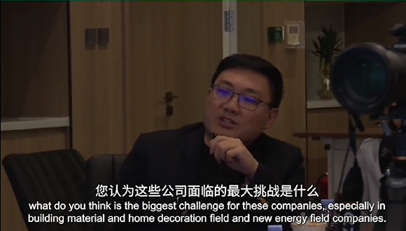
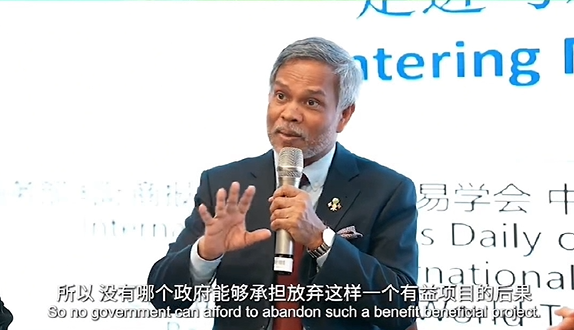
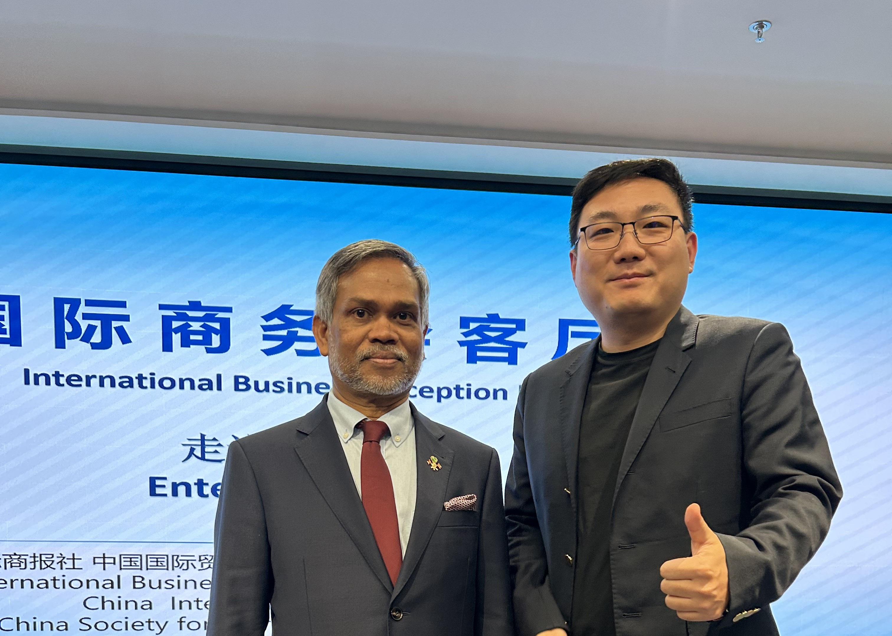

Bruce Dong in Dialogue with H.E. Dr. Fazeel Najeeb (Maldives Ambassador)
China–Maldives business, investment and talent exchange.


Transcript
Opening
Mr. President, and Mr. Li from the National Geographic Center — thank you for giving me the opportunity to attend this meeting today. I have been to over 30 countries in the past decade, including the Maldives. My question is about the "New Island" project you mentioned. Will this policy remain stable over the next three to five years? And beyond your own company entering the Maldives, what do you think is the biggest challenge for companies — especially in building materials, decoration, and the new-energy sector?
Will the New Island project continue?
That is a very good question. Your first question was whether the continuation of the New Island project is assured for the next five years. We do have changes of government from time to time. But when it comes to a large project such as the environmentally friendly island project our President has started, reclamation will be finished in the next five to six months. Once the island is reclaimed, everybody stands to gain — there will be houses, businesses, infrastructure, hospitals, schools, everything. So everyone in the Maldives, including foreigners, will benefit. No government can afford to abandon such a beneficial project. It will continue. There may be slight variations here and there, but the larger project will certainly continue.
The biggest challenge for foreign companies
For the second part of your question — there is tremendous opportunity for foreigners to participate, no doubt about it; many foreign companies already work in the Maldives. For those coming in to start a new project, the greatest difficulty is first mobilization: it is hard to go and start a new project, because you must bring in all your machinery and build quarters for your staff. The government provides space where companies can build their own quarters — that is how Chinese companies, and earlier Japanese and other construction firms, solved their accommodation issues.
One thing is absolutely critical for new entrants: local knowledge. Without it, you are bound to run into many difficulties. To avoid that, it is best to recruit a couple of staff members with local experience — that will help you a long way in dealing with government institutions, local suppliers, the tax authority, and other parties. Local knowledge is, I would say, very, very crucial.
This transcript is transcribed and organized from the Gateway To New video dialogue (2025).
